[Misc] Crack Me If You Can - 100 Pts.
We’re given with this file.
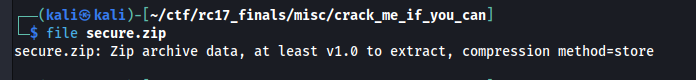
Attempting to unzip the file…
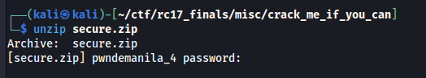
And as expected, the zip file is password protected.
Examining the file further using exiftool, we noticed that there are the flag.txt and pwndemanile_n files contained.
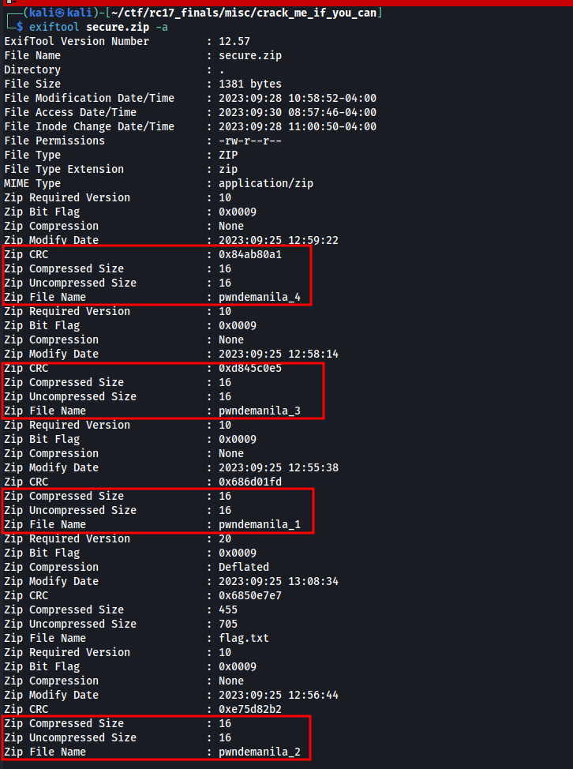
It can also be noticed that the contents of pwndemanila_n files are small. We researched how can we take a leverage of small sized files inside an encrypted zip file and we found a script that can extract plaintext contents of an encrypted file if the original file is around 4 bytes in size. It leverages the CRC value (checksum of the plaintext contents) and the fact that the plaintext content is very short.
Before running the script, we edited the script to only just include files that have small size (in this case, we only wanted files that <= 4)
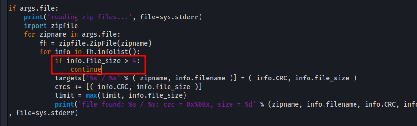
Running the script…
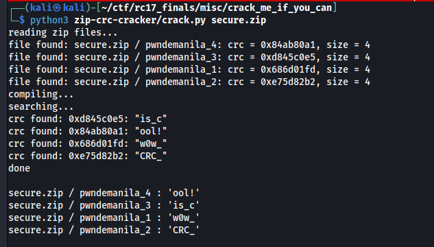
…it successfully retrieved the plaintext contents of pwndemanila_n files. Putting the plaintext values together, it is w0w_CRC_is_cool!.
We attempted to use the contents as the password for the zip file but it didn’t work. We then attempted to use john the ripper and use the plaintext value as password and used the best64 rule. Executing it…
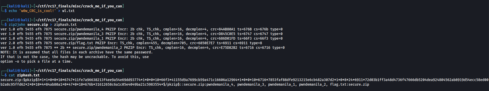
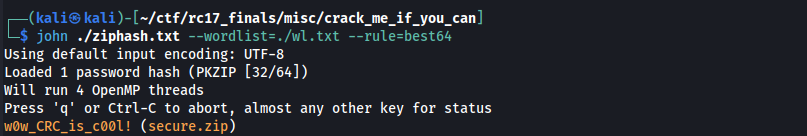
We managed to get the password! We can now decrypt the zip file.
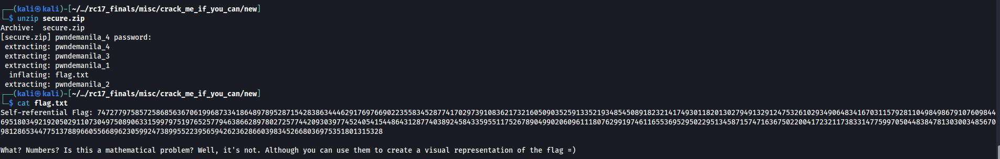
Another hurdle of getting the actual flag is below. It says:
Self-referential Flag: 74727797585725868563670619968733418648978952871542838634446291769766902235583452877417029739108362173216050903525913352193485450891823214174930118201302794913291247532610293490648341670311579281104984986791076098446951803492192050291107304975089063315997975197652577946386628978027257744209303977452405415448643128774038924584335955117526789049902060961118076299197461165536952950229513458715747163675022004172321173833147759970504483847813030034856709812865344775137889660556689623059924738995522395659426236286603983452668036975351801315328
What? Numbers? Is this a mathematical problem? Well, it's not. Although you can use them to create a visual representation of the flag =)
After a lot of brainfarting and headbanging, we tried to convert the number into binary number in the hopes that the digits may somehow form some kind of image. (e.g. QR Code, actual text, etc.)
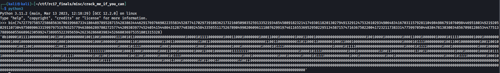
After some time of checking out any combination, we managed to get a “readable”, sort of, text that looks like a flag format. We have to squish the binaries vertically by adjusting the terminal window and piping the binary into a grep command so that there is a color appearing for 1s or 0s.
We used
cat bins.txt| grep 0

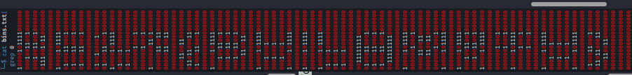
Above is the rotated image so you don’t have to tilt your head like an idiot like we did :).
The real gave away here are the curly braces and the 0 character in the center. However, this is still a head scratcher since we do not know what to interpret here and anything is barely readable.
With more headbanging and noticing, it seems that the upper half is more readable than the lower half so we created a script that removes the lower half and print only the upper half. See the code below.
import sys
from textwrap import wrap
import json
filename = sys.argv[1]
with open(filename, "r") as rf:
contents = rf.read()
for i in range(17, 18, 1):
print(json.dumps([item[7:] for item in wrap(contents, i)], indent=4).replace("1",u"\u2588").replace("0"," "))
Below result can be obtained. We also replaced 1s with a block (\u2588) and 0s with a space character for much better visuals.
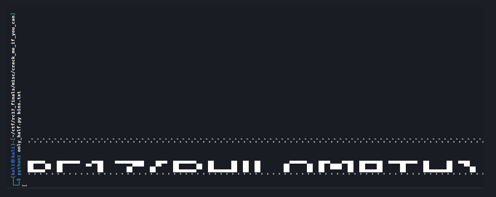
From this, we can better derive the flag.
We know that the first 5 characters are RC17{
The 6th character, we may conclude that it may be B, R, or P. It’s not R because it’s not the same with R from the first character. Therefore, our option is only B or P
7th character is H
8th character is I. We know this because it doesn’t have a 1 and the only other alphabet letter that can contain that form is I
9th character is L. No other form in the alphabet upper can do it.
10th character is either 0 or O
11th is M.
12th is A.
13th is T.
14th is H.
15th, obviously }
So we have RC17{?HIL?MATH}. Researching “bhilomath” or “philomath”, the only one that makes sense is the “philomath”. Therefore, RC17{PHIL0MATH} or RC17{PHILOMATH} may be the answer.
Submitting the flag, RC17{PHILOMATH} was the correct answer.
Much easy and intended solution
I discussed with motoh4ck3r, the challenge creator, about our solution. The intended solution for the last part is different from our method. Turns out, we can search “Tupper self referential formula playground”. The “Self-referential Flag” should have been the clue.
https://keelyhill.github.io/tuppers-formula/ is used and the number provided can be used in there to get the flag properly.
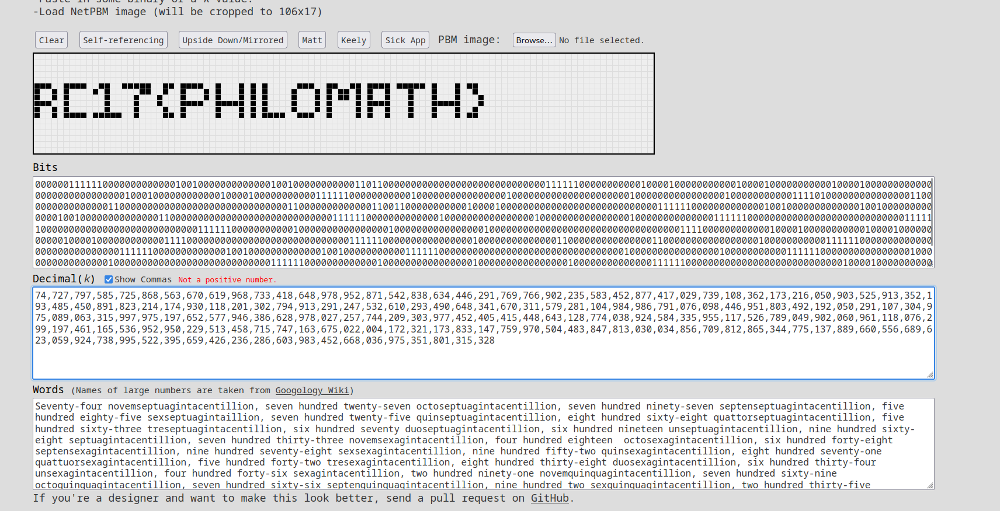